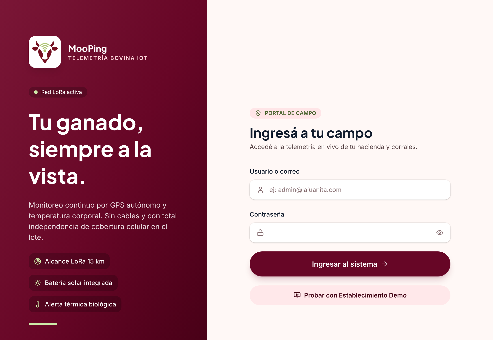
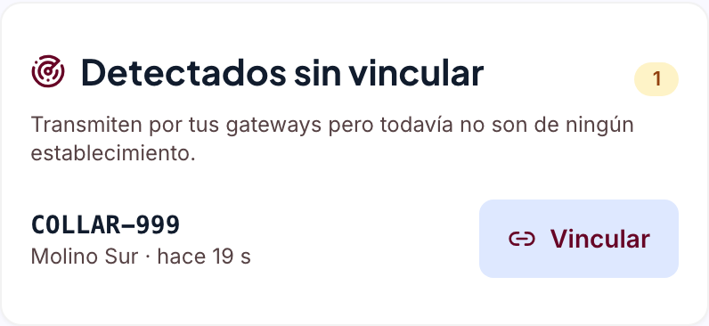
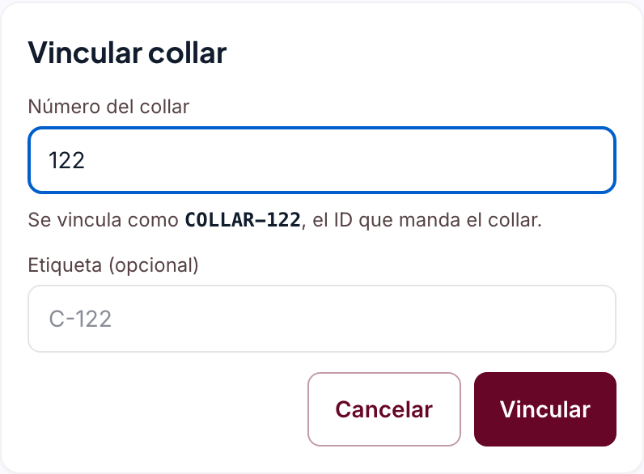
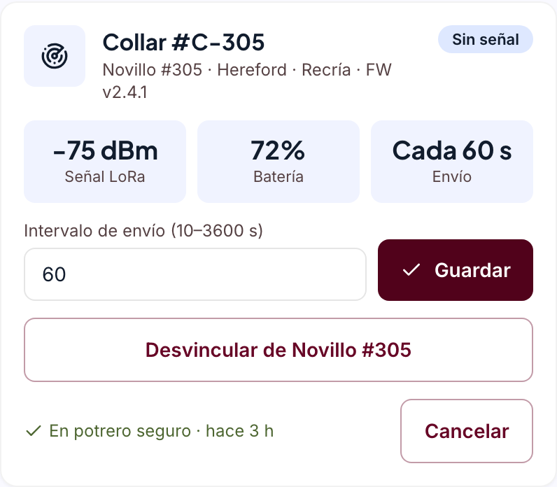
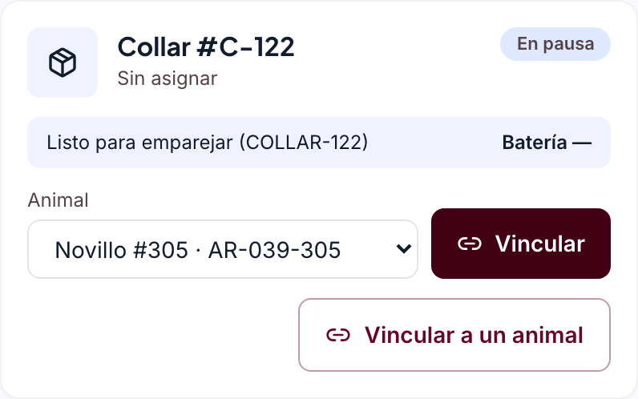
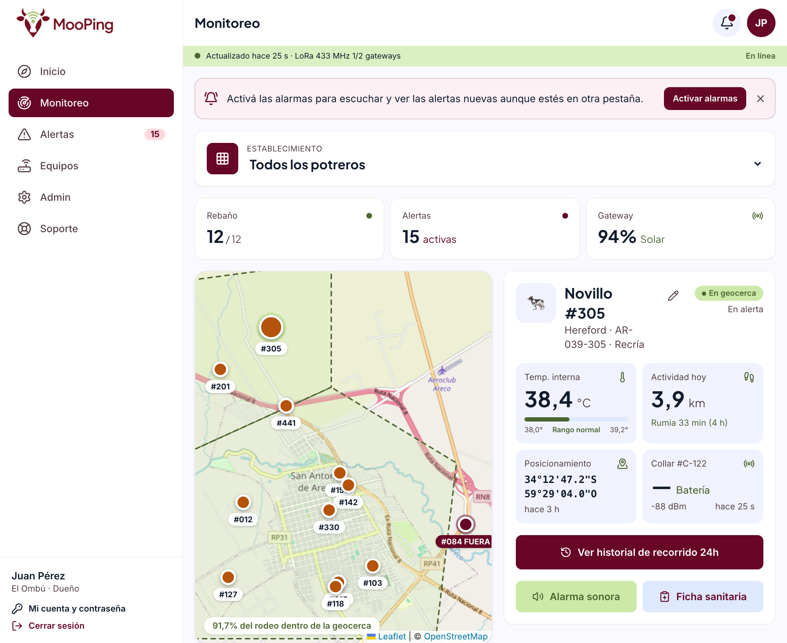

Paso a paso para levantar MooPing en tu PC con Docker, preparar la Raspberry Pi con el receptor LoRa y ver los datos de un collar en la app.
start.pyEl collar AgroNeck manda su posición y temperatura por radio LoRa. La Raspberry Pi la recibe con la placa SX1278, la convierte a JSON y la reenvía por la red a MooPing, que corre en tu PC dentro de Docker. MooPing la guarda, calcula alertas y la muestra en la web.
| Qué | Detalle |
|---|---|
| Una PC | Windows 10/11 o macOS, con 8 GB de RAM o más y unos 10 GB libres. Ahí corre MooPing. |
| Raspberry Pi | Pi Zero 2 W con la placa AgroBot (radio SX1278), tarjeta microSD de 16 GB o más y su fuente. |
| Collar AgroNeck | Ya flasheado (si no, ver firmware/AgroBot/Setup.md, paso 6). Para la primera prueba no hace falta: la sección 7 simula una lectura. |
| Una red WiFi | La PC y la Pi tienen que estar en la misma red. La Pi Zero 2 W solo usa WiFi de 2,4 GHz. |
Esta guía describe el código que está en la rama main del repositorio. Si ya tenías el
proyecto clonado, hacé git pull antes de seguir (en la PC y en la Pi).
http://localhost:5173 con la demo cargada (sección 3).MooPing corre en 4 contenedores de Docker. start.py es un script de Python que los
levanta, y Git sirve para bajar el código. Instalá las tres cosas según tu sistema.
wsl --installdocker.com/products/docker-desktop e instalalo con la
opción "Use WSL 2 instead of Hyper-V" tildada. Reiniciá si te lo pide.git-scm.com/download/win, con las opciones por defecto.python.org/downloads. En la primera pantalla del instalador
tildá "Add python.exe to PATH".docker.com/products/docker-desktop. Elegí la versión de tu chip:
Apple Silicon (M1/M2/M3/M4) o Intel (lo ves en → Acerca de esta Mac).
Arrastralo a Aplicaciones y abrilo.xcode-select --installpython.org/downloads (instalador .pkg) o, si usás Homebrew,
brew install python.Abrí Docker Desktop y esperá a que abajo a la izquierda diga "Engine running" (la primera vez tarda un poco y puede pedirte aceptar los términos). Docker tiene que estar abierto cada vez que uses MooPing.
Después abrí una terminal (PowerShell en Windows, Terminal en macOS) y verificá:
docker --version
docker compose version
git --version
python --version # en macOS: python3 --versionLos cuatro tienen que responder con un número de versión. Si alguno dice "no se reconoce" o "command not found", cerrá y volvé a abrir la terminal; si sigue igual, reinstalalo (en Windows, revisá que Python tenga tildado "Add to PATH").
start.pyEn la terminal, andá a la carpeta donde quieras guardar el proyecto (por ejemplo Documentos) y corré:
git clone https://github.com/Nossva/MooPing.git
cd MooPing/mooping # en Windows también funciona: cd MooPing\moopingpython start.py # en macOS: python3 start.pystart.py hace, en orden:
docker compose up -d --build: construye y levanta los 4 contenedores.db/upgrade-*.sql (actualizaciones del esquema)./api/health/) y la web.http://localhost:5173 en el navegador.Entre 3 y 10 minutos: Docker baja las imágenes e instala las dependencias. Las siguientes veces arranca en segundos. Mientras tanto vas a ver mensajes como "Esperando a que responda…". Es normal.
Cuando termina, muestra:
MooPing está andando: http://localhost:5173/ (API: http://localhost:8000/api/health/)La base arranca vacía. Cargá el establecimiento de demo "El Ombú" (12 animales, collares, gateways y alertas):
docker compose exec backend python manage.py seed_demoDemo lista: 12 animales, 14 collares, 1072 lecturas, 4 alertas abiertas.
Login: demo@mooping.app / mooping123Si dice Ya existe "El Ombú", la demo ya estaba cargada: no hace falta hacer nada. Para
dejarla como nueva: docker compose exec backend python manage.py seed_demo --reset.
En http://localhost:5173 tocá "Probar con Establecimiento Demo", o entrá con
demo@mooping.app / mooping123 (usuario Dueño, puede editar todo).

Para ver que estén corriendo: docker compose ps (desde la carpeta mooping).
| Contenedor | Puerto | Qué hace |
|---|---|---|
mooping-db | 5432 (solo esta PC) | Base de datos PostgreSQL + PostGIS. |
mooping-backend | 8000 | La API que usa la web. |
mooping-telemetry | 4001 | Recibe las lecturas de la Raspberry Pi por TCP y genera alertas. |
mooping-frontend | 5173 | La página web (React). |
La Pi le va a mandar los datos a tu PC al puerto 4001. Para eso necesitás la IP de la PC en la red WiFi y que el firewall deje pasar ese puerto.
ipconfigBuscá el bloque "Adaptador de LAN inalámbrica Wi-Fi" y anotá la Dirección IPv4
(por ejemplo 192.168.1.50).
ipconfig getifaddr en0Devuelve la IP directamente. Si no muestra nada, probá con en1, o mirala en
Configuración → Wi-Fi → Detalles.
192.168.1.50 como ejemplo
Reemplazala siempre por la IP real de tu PC. Si la PC cambia de red, la IP cambia.
En PowerShell como administrador:
New-NetFirewallRule `
-DisplayName "MooPing telemetria" `
-Direction Inbound -Protocol TCP `
-LocalPort 4001 -Action Allow `
-Profile PrivateLa regla vale para redes privadas: en Configuración → Red e Internet → Wi-Fi → (tu red), marcala como "Red privada". Si Windows muestra un aviso del firewall para Docker, tocá Permitir.
Configuración del Sistema → Red → Firewall. Si está desactivado, no hay que hacer nada. Si está activado: Opciones… → agregá Docker y elegí "Permitir conexiones entrantes". También podés tocar Permitir cuando macOS lo pregunte.
Sin clave, MooPing acepta lecturas de cualquiera en la red. Con una clave, solo de la Pi que la conoce. Generá una:
python -c "import secrets; print(secrets.token_urlsafe(24))" # macOS: python3Abrí mooping/backend/.env con un editor de texto (lo crea MooPing la primera vez), agregá
al final la línea con tu clave y reiniciá la telemetría:
TELEMETRY_API_KEY=<la-clave-que-generaste>docker compose restart telemetryAnotá la clave: la vas a pasar a la Pi como TELEMETRY_KEY. No la subas a git ni la
pegues en grupos (.env ya está en .gitignore).
raspberrypi.com/software) y poné la
microSD.agrobotssh <tu-usuario>@agrobot.localLa primera vez pregunta si confiás en el equipo: escribí yes. Si agrobot.local
no funciona (pasa en algunas redes), buscá la IP de la Pi en la página del router y usá
ssh <tu-usuario>@<ip-de-la-pi>.
Pi Desde acá, todos los comandos de las secciones 5 a 8 que digan "Pi" se corren dentro de esta sesión SSH.
sudo apt update
sudo apt install -y git cmake build-essential netcat-openbsdsudo raspi-configAndá a Interface Options → SPI → Yes, salí con Finish y reiniciá:
sudo rebootVolvé a entrar por SSH y verificá que existan los dos dispositivos:
ls -l /dev/spidev0.0 /dev/gpiochip0Si dice No such file or directory para spidev0.0, SPI no quedó habilitado: repetí
el paso.
Si usás la placa AgroBot ya armada, viene conectada así. Si cableás a mano, seguí esta tabla (numeración BCM y pin físico del header de 40 pines):
| Señal SX1278 | GPIO (BCM) | Pin físico |
|---|---|---|
| MOSI | 10 | 19 |
| MISO | 9 | 21 |
| SCLK | 11 | 23 |
| CS | 8 | 24 |
| RESET | 25 | 22 |
| DIO0 | 24 | 18 |
Usar la radio sin antena puede dañar el módulo. El receptor y el collar trabajan en 433 MHz: la antena tiene que ser para esa frecuencia.
Pi
git clone https://github.com/Nossva/MooPing.git
cd MooPing/firmware/AgroBot/firmware
cmake -S . -B build
cmake --build build -j2En la Pi Zero tarda uno o dos minutos. Al final tienen que existir dos programas:
ls build/agrobot-lora-receiver build/agro-neck-clientagrobot-lora-receiver es el que usamos: escucha la radio y reenvía cada lectura.
(agro-neck-client es un simulador del sistema AgroBot, no lo necesitamos para MooPing.)
No hay que tocar el código: todo se pasa con variables al arrancarlo.
| Variable | Para qué | Ejemplo |
|---|---|---|
TELEMETRY_TARGETS | A quién le manda cada lectura: ip:puerto, hasta 4 separados por coma. Sin la variable usa 127.0.0.1:4001. | 192.168.1.50:4001 |
GATEWAY_ID | Qué gateway recibió el paquete. Tiene que existir en MooPing: la demo trae AGROBOT-01 ("Molino Sur") y AGROBOT-02 ("Casco"). | AGROBOT-01 |
TELEMETRY_KEY | La clave de la sección 4, si la configuraste. Si no, no la pongas. | <tu-clave> |
sudo
sudo borra las variables de entorno. Por eso se escribe
sudo TELEMETRY_TARGETS=… ./build/agrobot-lora-receiver y no al revés.
Antes de sumar la radio y el collar, comprobamos que la Pi llegue a MooPing mandando una lectura inventada a mano. Si esto funciona, cualquier problema posterior es de la radio, no de la red.
docker compose logs -f telemetry(Desde la carpeta mooping. Para salir: Ctrl+C.)
Reemplazá la IP por la de tu PC:
printf '%s\n' '{"ID":"COLLAR-999", "LAT":-34.70, "LONG":-58.24,
"TEMP":"38.5", "GW":"AGROBOT-01"}' | nc -N -w 3 192.168.1.50 4001Es un solo comando de dos líneas: copialo entero. Si configuraste clave, agregá
, "KEY":"<tu-clave>" antes de la última llave:
printf '%s\n' '{"ID":"COLLAR-999", "LAT":-34.70, "LONG":-58.24,
"TEMP":"38.5", "GW":"AGROBOT-01", "KEY":"<tu-clave>"}' | nc -N -w 3 192.168.1.50 4001En el log de la telemetría aparece una línea así (la IP entre corchetes y los números cambian):
mooping-telemetry | [192.168.65.1] lectura 1090 collar 33Y en la web, en Equipos, aparece la tarjeta "Detectados sin vincular" con el collar de prueba recibido por "Molino Sur":

Si no aparece nada en el log, la lectura no llegó: mirá la sección 9 (IP, firewall, misma red). Si aparece descartada: falta KEY…, la clave no coincide.
COLLAR-999 no existe en la realidad. No lo vincules; desaparece solo de la lista a los 7
días. Para borrarlo ya:
docker compose exec db psql -U mooping -d mooping -c "DELETE FROM devices WHERE device_uid='COLLAR-999'"
cd ~/MooPing/firmware/AgroBot/firmware
sudo TELEMETRY_TARGETS=192.168.1.50:4001 \
GATEWAY_ID=AGROBOT-01 \
./build/agrobot-lora-receiverCon clave:
sudo TELEMETRY_TARGETS=192.168.1.50:4001 \
GATEWAY_ID=AGROBOT-01 \
TELEMETRY_KEY=<tu-clave> \
./build/agrobot-lora-receiverForwarding telemetry to 192.168.1.50:4001
Gateway ID: AGROBOT-01
Telemetry key: not set (backends must accept any sender)
SX1278 version: 0x12
Listening for AgroNeck LoRa packets at 433 MHzTelemetry key: set si pasaste la clave.0x12. Si da 0x00 o 0xFF, la Pi no
está hablando con la radio: revisá el cableado y que SPI esté habilitado.El AgroNeck duerme hasta que detecta movimiento: movelo. Con cada transmisión la Pi muestra (los valores cambian):
Raw LoRa packet (14 bytes): 7A 00 9A 99 19 42 ...
Received collar=122 temperature=38.40 C latitude=-34.707652 longitude=-58.242300
Signal RSSI=-88 dBm SNR=7.25 dBSi aparece connect to telemetry backend … después de cada paquete, la lectura no le está
llegando a MooPing: volvé a la sección 7. El GPS puede tardar varios minutos en conseguir señal al
aire libre; mientras tanto el collar manda latitud y longitud en 0 y MooPing guarda la lectura sin
posición.
COLLAR-122.
Tocá Vincular: el número y la etiqueta (C-122) ya vienen cargados. Confirmá con
Vincular.

C-305, tocá Configurar y después
"Desvincular de Novillo #305" (pide confirmación).

C-122 (o usá el filtro Sin asignar), tocá "Vincular a un animal",
elegí Novillo #305 y confirmá.

Las lecturas que llegaron antes de asignar el collar no tenían animal. La posición del animal se actualiza con la primera lectura que llega después de asignarlo.

Además, en Equipos y en Soporte el gateway Molino Sur pasa a figurar conectado mientras lleguen lecturas.
Al terminar, para dejar la demo como estaba: docker compose exec backend python manage.py seed_demo --reset.
Si en la Pi corre el servidor AgroBot (ver firmware/AgroBot/Setup.md), el receptor puede
mandar cada lectura a los dos sistemas a la vez:
sudo TELEMETRY_TARGETS=127.0.0.1:4001,192.168.1.50:4001 \
GATEWAY_ID=AGROBOT-01 \
./build/agrobot-lora-receiverSi uno de los dos está apagado, el otro sigue recibiendo: cada envío corta a los 2 segundos.
| Síntoma | Qué hacer |
|---|---|
start.py: "No encontré Docker" | Docker Desktop no está instalado, o la terminal se abrió antes de instalarlo: cerrala y abrí una nueva. |
start.py: "Docker no está corriendo" | Abrí Docker Desktop y esperá "Engine running". |
| "python" no se reconoce (Windows) | Reinstalá Python tildando "Add python.exe to PATH", o usá py start.py. |
port is already allocated / puerto ocupado | Otro programa usa 5432, 8000, 4001 o 5173. Creá mooping/.env con, por ejemplo, DB_PORT=5433, BACKEND_PORT=8001, TELEMETRY_PORT=4002 y volvé a correr start.py. Si cambiás TELEMETRY_PORT, usá ese puerto en la Pi. |
| La web dice "No se pudo cargar" | El backend se está reiniciando: esperá unos segundos. Si sigue: docker compose logs --tail 40 backend. |
| Login: "Email o contraseña incorrectos" con la demo | Falta cargar la demo: docker compose exec backend python manage.py seed_demo. |
| "Demasiados intentos" | Hay un límite de intentos de login: esperá un minuto. |
| Después de actualizar, la web pide entrar de nuevo | Normal: la sesión ahora usa una cookie segura. Volvé a entrar. |
| Síntoma | Qué hacer |
|---|---|
open SPI device: No such file or directory | SPI no está habilitado: sudo raspi-config → Interface Options → SPI → Yes, y reiniciá. |
open SPI device: Permission denied | Falta sudo adelante del comando. |
SX1278 version: 0x00 o 0xFF | La Pi no ve la radio: cableado, placa mal asentada o SPI apagado. |
connect to telemetry backend 192.168.1.50:4001: Connection refused | La IP es de la PC pero MooPing no escucha: ¿está corriendo? (docker compose ps) ¿Cambiaste TELEMETRY_PORT? |
… Connection timed out o No route to host | La Pi no llega a la PC: IP equivocada, firewall (sección 4), o la PC y la Pi en redes distintas (ojo con redes de "invitados", que aíslan los equipos). |
Discarded LoRa packet with CRC error | El paquete llegó dañado: acercá el collar, revisá las antenas. |
| No aparece nada al mover el collar | Collar sin batería o dormido; las dos radios tienen que estar en 433 MHz. |
Invalid telemetry target '…' (expected host:port) | Falta el puerto: 192.168.1.50:4001, no 192.168.1.50. |
Ignoring GATEWAY_ID / TELEMETRY_KEY: use up to … | Usá solo letras, números, -, _ y ., sin espacios ni comillas. |
telemetry)| Síntoma | Qué hacer |
|---|---|
descartada: falta KEY o no coincide con TELEMETRY_API_KEY | La clave de la Pi (TELEMETRY_KEY) no es igual a la de backend/.env, o se cambió .env y falta docker compose restart telemetry. |
| Llega la lectura pero no aparece en "Detectados" | Falta GATEWAY_ID, o el gateway no existe en MooPing (con la demo: AGROBOT-01 o AGROBOT-02). Si el collar ya estaba vinculado, no aparece ahí: buscalo en Collares en campo. |
| El collar figura "Sin señal" | No llegan lecturas hace más de 30 minutos. Revisá que el receptor siga corriendo. |
PC Todos desde la carpeta mooping.
| Para | Comando |
|---|---|
| Apagar MooPing (los datos se guardan) | docker compose down |
| Volver a levantarlo | python start.py |
| Traer la última versión del código | git pull y después python start.py |
| Ver qué contenedores corren | docker compose ps |
| Ver lo que llega de la Pi | docker compose logs -f telemetry |
| Ver errores del backend | docker compose logs --tail 40 backend |
Reiniciar la telemetría (después de cambiar .env) | docker compose restart telemetry |
| Dejar la demo como nueva | docker compose exec backend python manage.py seed_demo --reset |
| Borrar toda la base y empezar de cero | docker compose down -v (después start.py y seed_demo) |
Pi
| Para | Comando |
|---|---|
| Parar el receptor | Ctrl+C en su terminal |
| Actualizar y recompilar | cd ~/MooPing, git pull, cd firmware/AgroBot/firmware y cmake --build build -j2 |
| Apagar la Pi sin dañar la tarjeta | sudo shutdown now (esperá a que se apague la luz antes de desenchufar) |
mooping/README.md: cómo funciona MooPing, puertos y producción con HTTPS.mooping/backend/ENDPOINTS.md: la API y la autenticación.firmware/AgroBot/firmware/README.md: el receptor y el formato del JSON.firmware/AgroBot/Setup.md: AgroBot y el flasheo del collar AgroNeck.